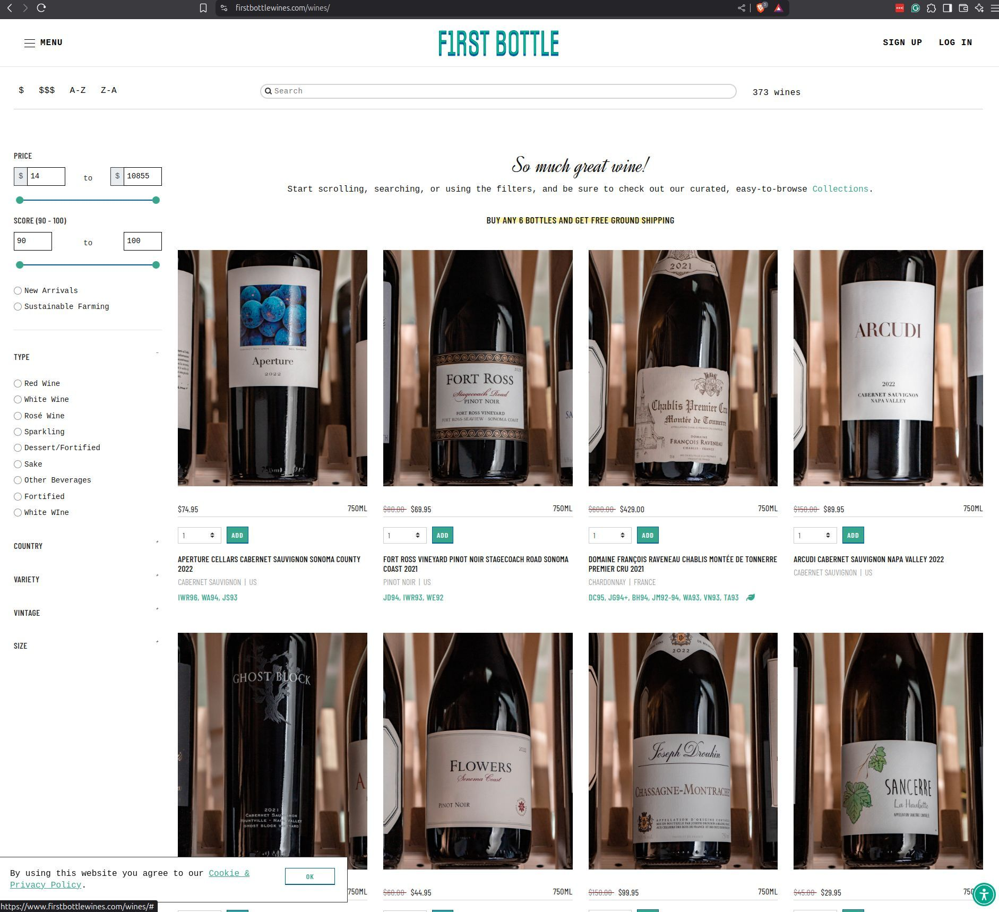

DIGITAL BEVERAGE GROUP / 2025–2026
Director of Technology & Operations
Wine e-commerce.
Startup → scale-up.
Led the technology modernization of a multi-brand wine e-commerce business, replacing a legacy platform with Shopify Plus and Linnworks WMS without disrupting trading.
4storefronts
2mobile apps
6commerce models
35,000SKUs / 20 brands
- Product and vendor ownership. Own 4 e-commerce storefronts and 2 React Native mobile apps: roadmap, prioritization, contracts, and vendor performance across the full commerce surface.
- A growing mobile channel. Delivered the mobile apps on Shopify, now a major and fast-growing sales channel for the business.
- Six models, one catalog. Supported flash sales, full-price shop, private sales, auction, wine club, and conversational/chat commerce from a single merchandising and catalog data model.
- Corporate IT and AI adoption. Run Google Workspace, Microsoft 365, Palantir, and Claude Enterprise end-to-end, including help desk, AI rollout, governance, and organization-wide adoption.
- Internal services and data pipelines. Build in Python, FastAPI, Supabase, Pandas, and SQL, including order, customer, and product migration workflows.
- Operations and analytics. Use Retool & HTMX for operations interfaces, AfterShip for post-purchase, and Microsoft Fabric + Palantir Foundry for analytics.
- Finance and infrastructure. Integrate NetSuite for finance and operate on Cloudflare with Datadog observability.
FIRST BOTTLE / COMMERCE

Explore the commerce portfolio.
- Last Bottlelastbottlewines.com
High-velocity, high-volume daily and flash sales with complex commerce operations.
- Last Bubbleslastbubbles.com
White and sparkling wines, with high-velocity, high-volume daily and flash sales.
- First Bottlefirstbottlewines.com
A large, sophisticated, data-rich shoppable store, with private sales and wine clubs.
- The Yount Roomtheyountroom.com
A collective tasting room in Yountville, Napa, California, connecting POS and e-commerce.
- No&Conoandco.shop
Non-alcoholic lifestyle and category-defining brands, including Berstin Method beverages and Enova.